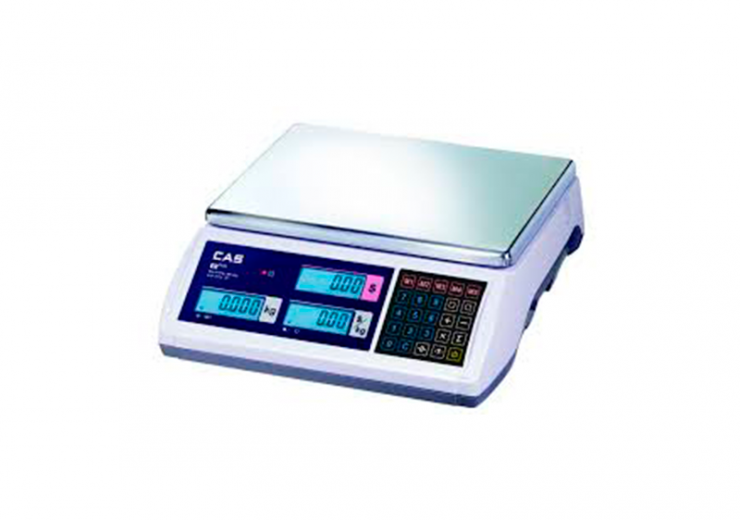
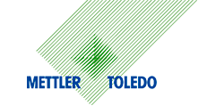
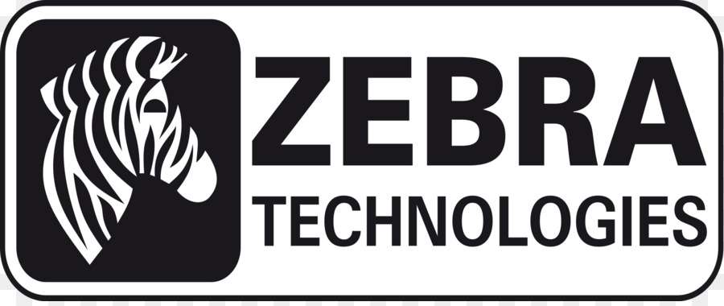
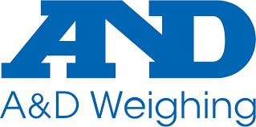
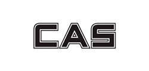

Comercial

Básculas, plataformas y puntos de venta con 46 años de respaldo. Venta, instalación y servicio en sitio en todo Baja California.
Precisión, venta, soporte e innovación. Todo lo que tu negocio necesita para pesar y cobrar con exactitud.
Balanzas comerciales, de precisión y plataformas industriales certificadas para mediciones exactas.
Ver productos →Automatiza el cobro y gana la confianza de tus clientes con sistemas POS confiables.
Ver productos →Etiquetas, rollos y refacciones originales para mantener tus equipos siempre operando.
Ver productos →Integramos las últimas tecnologías de pesaje y control para modernizar tu operación.
Conocer más →Sin sorpresas ni vueltas: así te acompañamos desde la primera llamada hasta el soporte continuo.
Visitamos o platicamos contigo para entender tu operación y qué necesitas pesar, cobrar o controlar.
Te proponemos el equipo exacto —sin sobrevender— con precio y tiempos claros por escrito.
Nuestros técnicos instalan, calibran y capacitan a tu personal para que operen desde el día uno.
Pólizas de mantenimiento, refacciones en stock y soporte remoto o en sitio cuando lo necesites.
Del abarrote de la esquina a la planta industrial: equipamos negocios de todos los tamaños.
Una muestra de lo que manejamos. Cotiza en línea o explora el catálogo completo.

Damos servicio en cada municipio de Baja California, en San Luis Río Colorado (Sonora), La Paz y Los Cabos — y seguimos en expansión. Tenemos una base en Mexicali con stock de equipos y refacciones listo para responder rápido.
Marcas que comercializamos




Si no encuentras lo que buscas, un asesor te responde directo por WhatsApp.
Sí. Damos servicio en todos los municipios de Baja California, en San Luis Río Colorado (Sonora), La Paz y Los Cabos, con visitas técnicas programadas y una base con stock en Mexicali.
Sí, con pesas patrón trazables, como lo exige la normatividad para equipos de pesaje comercial.
Rentamos básculas contadoras y de plataforma por días o temporadas, ideal para inventarios o eventos.
Depende del equipo, pero la mayoría de instalaciones estándar se completan en 1 a 3 días hábiles, incluida la capacitación.
Contenido práctico escrito por nuestros técnicos, no genérico de internet.
Capacidad, precisión y certificación: lo que hay que revisar antes de comprar.
Evita multas y cobros incorrectos con equipo fuera de norma.
Manuales, novedades de producto y consejos de mantenimiento.
Un asesor te ayuda a elegir el equipo exacto para tu operación.